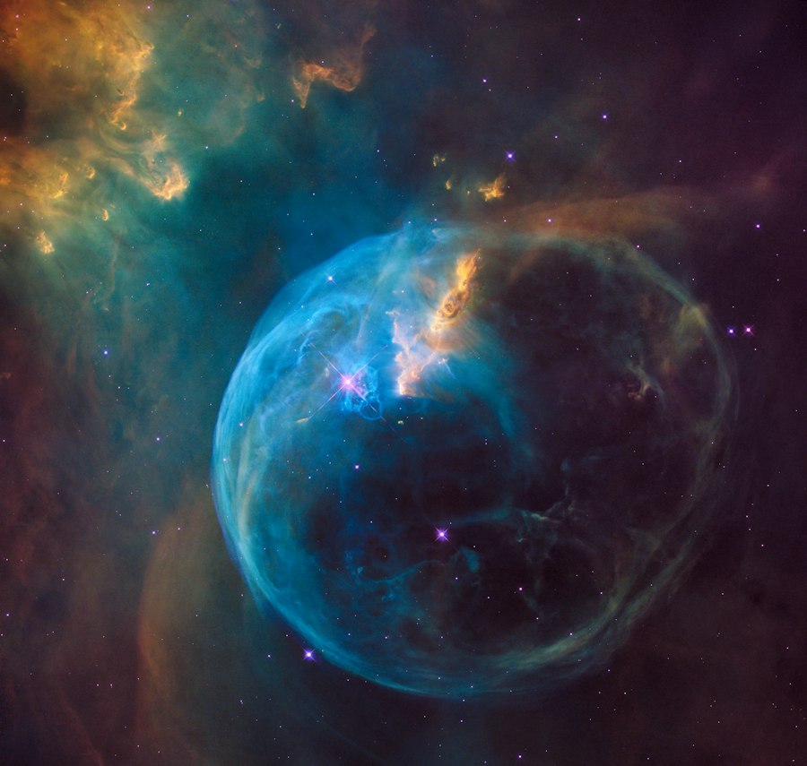
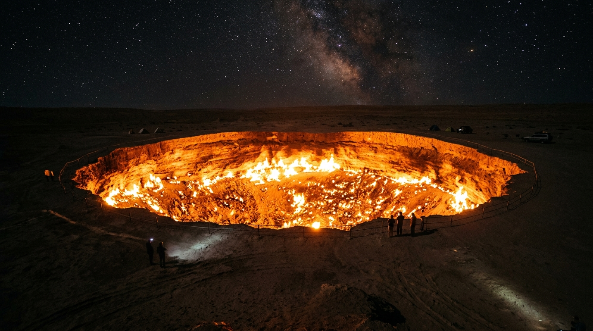
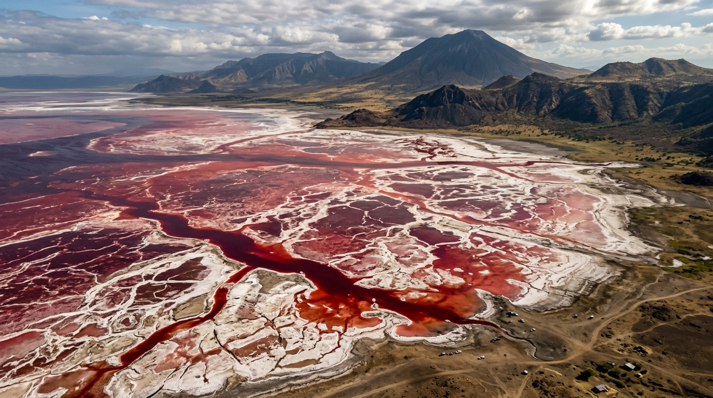
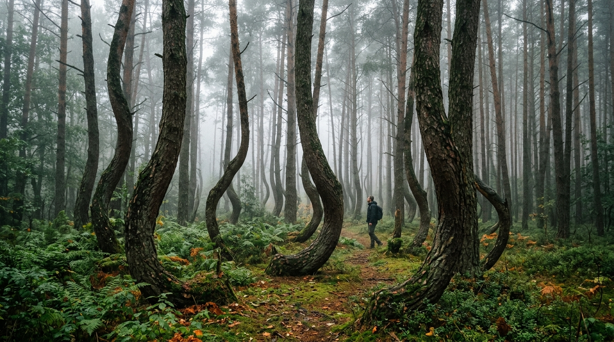

EM DESTAQUE
EM DESTAQUE
CIÊNCIA
O universo está cheio de coisas que parecem impossíveis
Descubra fatos surpreendentes e explicações curiosas para fenômenos que parecem saídos de um filme.
Ler artigo →Curiosidades, descobertas e histórias que fazem você olhar para o mundo de um jeito diferente.
Encontre uma nova curiosidade para descobrir hoje.
EM DESTAQUE
Descubra fatos surpreendentes e explicações curiosas para fenômenos que parecem saídos de um filme.
Ler artigo → ANIMAIS
ANIMAIS
Por que o corpo de um polvo funciona de uma maneira tão diferente e dois de seus corações param quando ele nada?
Ler artigo → ANIMAIS
ANIMAIS
Pesquisas comprovam que insetos com cérebros minúsculos conseguem memorizar traços faciais usando processamento holístico.
Ler artigo →Cientistas provaram que corvos reconhecem rostos de quem os prejudicou, passam esse rancor para filhotes e usam ferramentas complexas.
Ler artigo → ANIMAIS
ANIMAIS
Conheça o animal que desafia a biologia: quando fica velha ou ferida, ela simplesmente rejuvenesce e volta a ser um pólipo jovem.
Ler artigo →Seu golpe veloz acelera mais rápido que uma bala calibre .22, gera luz por cavitação e produz calor similar à superfície solar.
Ler artigo →
CIÊNCIA
Descubra como organismos sobrevivem à pressão esmagadora e à escuridão total no fundo dos oceanos.
Ler artigo → CIÊNCIA
CIÊNCIA
O espalhamento de Rayleigh revela por que a luz solar pinta a nossa atmosfera de azul e dourado.
Ler artigo →Em 1883, a erupção do vulcão Krakatoa gerou uma onda sonora que deu 4 voltas completas no planeta e rompeu tímpanos a 64 km.
Ler artigo → CIÊNCIA
CIÊNCIA
No coração de gigantes gasosos como Netuno e Urano existe gelo superiônico incandescente. Descubra a física inacreditável da água.
Ler artigo →A teoria da relatividade geral de Einstein na prática: a gravidade distorce o fluxo dos segundos e afeta até o GPS do seu celular.
Ler artigo → TECNOLOGIA
TECNOLOGIA
Quase 99% de todo o tráfego de dados intercontinental atravessa cabos de fibra óptica no fundo do mar.
Ler artigo → TECNOLOGIA
TECNOLOGIA
Stanislav Petrov confiou em sua intuição quando o sistema soviético apontou ataque de mísseis americanos que na verdade eram reflexos do Sol.
Ler artigo → TECNOLOGIA
TECNOLOGIA
Um ritual secreto da ICANN reúne especialistas para garantir a autenticidade do DNS que mantém o mundo online seguro.
Ler artigo →Engrenagens de bronze esculpidas na Grécia Antiga previam posições planetárias e eclipses com precisão milimétrica séculos antes de Cristo.
Ler artigo →Como um código invisível infectou centrífugas nucleares iranianas sem estar conectado à internet e abriu a era da ciberguerra.
Ler artigo → HISTÓRIA
HISTÓRIA
Termos comuns que guardam lendas curiosas, equívocos históricos e transformações linguísticas surpreendentes.
Ler artigo →Em 1932, soldados armados com metralhadoras Lewis enfrentaram milhares de emus que destruíam plantações no deserto australiano.
Ler artigo → HISTÓRIA
HISTÓRIA
O misterioso surto em Estrasburgo que fez homens e mulheres dançarem freneticamente nas praças sem conseguir parar durante semanas.
Ler artigo →
HISTÓRIAO lança-chamas naval que salvou Constantinopla por séculos e cuja fórmula química foi guardada como segredo de Estado até sumir.
Ler artigo → HISTÓRIA
HISTÓRIA
Análises de raios-X comprovaram que a lâmina dourada da tumba do jovem faraó foi esculpida a partir de um meteorito metálico antes da Idade do Ferro.
Ler artigo →De cavernas de cristais gigantes a rios em ebulição natural: formações que parecem cenários de ficção científica.
Ler artigo →
MUNDONo deserto do Turcomenistão, uma perfuração soviética falha deu origem a uma cratera em chamas perpétuas visível a quilômetros no escuro.
Ler artigo →O local no oceano onde os seres humanos mais próximos são astronautas na órbita terrestre, transformado em cemitério oficial de naves espaciais.
Ler artigo →
MUNDOCom pH próximo ao da amônia e temperaturas que chegam a 60°C, este lago tanzaniano calcifica corpos com perfeição assustadora.
Ler artigo →
MUNDOQuatrocentos pinheiros crescem com uma curva idêntica de 90 graus na base sem que a ciência ou a história tenham chegado a um consenso.
Ler artigo →Descubra fatos rápidos, vídeos e curiosidades todos os dias.